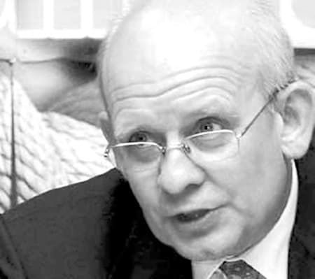

Impresia românului despre omul politic este că fură. Cu toții avem impresia că Parlamentul este o cloacă de hoți și că mai toți cei din Guvern sunt puși pe căpătuială. Nimic mai fals! În România mai sunt și alte categorii de politicieni. Spre exemplu, cei care au furat înainte de a intra în politică și cei care urmează să fure de acum încolo.
Cel mai recent raport al Transparency International în legătură cu percepția corupției în țările UE, situează România pe primul loc în rândul statelor cu încredere scăzută în parlamentari. Aproape o treime dintre români (33%) consideră Parlamentul o instituție coruptă, la rând venind, apoi, justiția (18%), partidele politice (17%), funcționarii publici și demnitarii (15%), domeniul privat (13%) și, pe ultimul loc, presa (4%). Dimpotrivă însă, tocmai pe presă dau vina pentru imaginea publică nefavorabilă vicepreședintele Camerei Deputaților, Ioan Oltean (PD-L), sau chestorul Senatului, Ioan Chelaru (PSD), care recunosc că au și unii colegi certați cu justiția. Președinta Camerei, Roberta Anastase, speră ca, prin eliminarea privilegiilor parlamentarilor, aceștia să-și găsească un statut mai demn în percepția populară. Alți cetățeni europeni care cred că reprezentanții lor în forul legislativ sunt corupți sunt lituanienii și bulgarii, la polul opus situându-se elvețienii, austriecii și islandezii.
Și totuși, de ce fură politicienii? Un răspuns ar fi pentru că nu-l mai avem pe țepeș Vodă. Ar fi o soluție mult prea simplă. Adevărul este însă altul. Se pare că românul înarmat cu ștampila de vot are o atracție fatală pentru politicianul hoț. Potrivit unui recent studiu sociologic, pentru majoritatea românilor modelul „Vanghelie” este o veritabilă rețetă de succes politic. Tupeist, prost grămadă, cu o avere dubioasă și agresiv. Acestea sunt atributele politicianului de succes. Păi și totuși, de ce fură politicienii? Simplu, pentru că noi îi punem să ne fure.
În timp ce scriu aceste rânduri, la televizor se discută despre Monica Iacob-Ridzi, puștoaica cu riduri din fruntea Ministerului Tineretului și Sportului. Ministra este acuzată că a cheltuit 628.000 de euro din bugetul ministerului pentru organizarea evenimentelor din 2 mai, de Ziua Tineretului. Peste 200.000 de euro din sumă ar fi bani țepuiți. I-au sărit ziariștii la beregată, iar parlamentarii au decis să o trimită în judecată. Cică rămâne de văzut dacă Boc o va demite. Tot circul ăsta inutil mă duce cu gândul la un scenariu prost de teatru. Monica este pusă la stâlpul infamiei, doar ca să vadă publicul la televizor ceva sânge de politician sacrificat. Păi și în fond, 200.000 de euro este exact suma pe care alții o fură zilnic.
Cred că este foarte interesant de dezbătut puțin pe marginea hoției politice. De câte feluri este ea? Cum sărăcește alegătorul și cum se îngrașă politicianul.
Fiecare votează cu cine vrea, iar din urnă iese cine trebuie. Cam acesta este principiul după care funcționează sistemul electoral românesc. Primul arest din România pentru fraudă electorală a fost în 2008, însă istoria fraudei electorale este lungă. Comuniștii au „câștigat” alegerile din 46, FSN-iștii, PDSR-iștii, PSD-iștii le-am manglit pe astea postdecembriste. Comuniștii și-au băgat voturile în urne cu mitraliera, urmașii lor s-au folosit de minciuni turnate pe tavă.
Academicianul Constantin Rădulescu-Motru nota, referindu-se la alegerile din 46, că autoritățile au împiedicat oamenii în mod arbitrar să participe la vot, iar buletinele de vot pe simbolul Blocul partidelor democratice – „Soarele” au fost introduse în urne înaintea deschiderii secțiilor de vot. „Camioane pline cu votanți (ai BPD-ului) călătoreau de la o secție de vot la alta, se spune că de mai multe ori chiar. După vot, formularele albe ale rapoartelor oficiale (care trebuiau completate de observatori) au fost trimise la comisia centrală, fiind completate apoi cu numărul de voturi dorit de guvern”, a mai notat academicianul.
Rezultatele oficiale: BPD-68,70% din voturi; 348 de mandate. În realitate, BPD a primit între 44,98% și 47% din voturi.
Să vedem cum a ieșit Băsescu președinte. Vă mai amintiți alegerile din 2004, Băse vs. Năstase? Ei bine, bătălia s-a purtat dincolo de ecranul televizorului, pe terenul numărătorii. Ambii și-au întins tentaculele de furat de voturi, câștigând cel care a furat mai multe. Spre exemplu, IMAS a constatat că există o asociere statistic semnificativă între procentul voturilor exprimate pe liste speciale și al voturilor nule, pe de o parte, și procentul voturilor obținute de PSD+PUR și candidatul Adrian Năstase. Cu cât într-o secție s-au înregistrat mai multe voturi pe liste speciale și mai multe voturi anulate, cu atât rezultatul votului a fost mai favorabil partidului aflat atunci la guvernare. Analiza statistică răspunde astfel la întrebările pe care autoritățile ar fi trebuit să le lămurească până acum. Mai ales că organizațiile civice și presa au demonstrat că la secțiile de votare s-au produs nereguli prin votul multiplu și anularea unor buletine.
Totuși, analiza nu mai poate dovedi fraudarea alegerilor, întrucât frauda este un concept juridic, nu unul statistic. Analiza dovedește doar că un partid a fost favorizat, și nu în mod marginal, de prezența masivă pe listele speciale (1.057.523 de persoane, adică peste 10% din totalul votanților) și de numărul mare al voturilor anulate (593.858). Frauda trebuia lămurită de poliție și justiție.
Pentru a face legătura între prezența pe listele speciale și tendințele votului, IMAS a utilizat analiza de regresie, procedeu care permite identificarea și măsurarea relației de dependență dintre un set de variabile independente (în acest caz, procentul alegătorilor înregistrați pe liste speciale, procentul voturilor nule si mediul de rezidență urban/rural) și o alta variabilă, dependență, în acest caz procentul de voturi obținut de Uniunea PSD+PUR și Alianța D.A. În secțiile cu puțini alegători pe listele speciale, Alianța DA a înregistrat, în medie, cu 3% mai mult decât PSD; în cele cu mulți alegători pe liste speciale, PSD a înregistrat cu 20% mai mult decât Alianța. Dacă aplicăm metoda și pentru secțiile cu multe voturi anulate, rezultatele merg în aceeași direcție. Se observă acolo că Alianța DA a obținut scoruri de mai mult de două ori mai bune în secțiile cu puține voturi nule decât în cele cu multe voturi anulate.
Cum a ajuns în 2009 Elena Băsescu în Parlamentul European? Păi simplu: slugile lui tac’su și-au dat silința să-i dea ștampile cu duiumul.
Pentru că pe la noi nu prea mai este nimic de furat, politicianul român își îndreaptă atenția spre fondurile Uniuni Europene. Și pentru că dacă furi de la alții nu este ca și cum ai fura de la tine, cel care fură din fondurile europene stă liniștit, crezând că electoratul nu-l va condamna. Zilnic aflăm despre responsabili care-și umplu buzunarele cu bani de la UE, atât de mult se fură, încât ne întrebam cum de ne mai dau bani.
În ultimii patru ani, au fost deschise peste 200 de dosare cu prejudicii de sute de milioane de euro, din care s-a recuperat sub 5%, iar judecătorii au dat doar 9 condamnări definitive în cazuri de fraudare a fondurilor europene.
Cu vreo trei săptămâni în urmă, Iosif Mihai Puwak, soțul lui Hildegard Puwak, fost ministru PSD al Integrării Europene, a fost condamnat, definitiv, la doi ani și jumătate de închisoare cu suspendare pentru deturnare de fonduri europene. Judecata a fost târâită de vreo câțiva ani, însă abia acum sentința a devenit irevocabilă. Decizia a fost luată de Curtea de Apel București care a judecat recursul în acest caz. În 30 ianuarie, Tribunalul București a decis condamnarea lui Iosif Mihai Puwak la doi ani și jumătate de închisoare cu suspendare pentru deturnare de fonduri europene, instanța Tribunalului București dispunând și interzicerea unor drepturi ale acestuia pentru doi ani. Iosif Mihai Puwak a fost trimis în judecată de procurorii anticorupție în iulie 2007. Din 2000 până în 2003, acesta a contractat și utilizat necorespunzător fonduri europene de peste 230.000 de euro.
Un alt dosar există și pe numele fiului Mihai Puwak, fiul fostului ministru pentru fals in înscrisuri sub semnătura privată, deturnare de fonduri și schimbarea, fără respectarea prevederilor legale, a destinației fondurilor europene. Mihai Puwak, asociat și administrator al societății „P&I International” SRL, este acuzat de fals în înscrisuri sub semnătură privată, în forma continuată, deturnare de fonduri, precum și de schimbarea, fără respectarea prevederilor legale, a destinației fondurilor europene, care au creat un prejudiciu de 32.160 de euro în dauna bugetului general al comunităților europene.
Ce s-a întâmplat în acest caz? Doamna Puwak era în fruntea unui minister care împărțea banii europeni. Domnul Puwak vroia și el să simtă ceva în buzunare, la fel ca și micul Puwak. Astfel că, doamna Puwak a pus familia pe primul loc și le-a îndeplinit dorințele celor doi.
Privatizarea a însemnat pentru România un proces prin care s-au luat bunurile poporului, s-au devalorizat și apoi s-au împărțit între hoți. Întreaga industrie a fost repede măcelărită. Spre exemplu, Roman SA din Brașov a ajuns la posesia miliardarului Ioan Neculae, pe valoarea unui simplu apartament. Sidex s-a dat pe nimic, Romtelecom pe un pumn de nasturi, flota României a ajuns la fier vechi, la fel ca și întreaga industrie chimică.
În ultimii ani, furtul din privatizări a ajuns la o asemenea dimensiune, încât hoții de rând din România au trebuie să-și angajeze consultanți internaționali în materie de mangleală la scară mare. Bulgarul Stamen Stancev și americanul de origine rusa Vadim Benyatov sunt doar două personaje care și-au făcut veacul pe la noi. Stancev a tras sforile în cel puțin patru privatizări majore: Electrica Muntenia Sud, Petrom, Radiocomunicații SA și Romtelecom. La privatizarea Sc Electrica Muntenia Sud, demarată în ianuarie 2006, au participat inițial 10 ofertanți. Doar cinci dintre ei au fost calificați în faza a doua a licitației. Printre ei și ENEL SPA Italia. În acel moment a intervenit Stamen Stancev și rusul Vadim Benyatov. Bulgarul i-a promis lui Benyatov că-i va face rost de ofertele depuse de ceilalți 4 contracandidați. În acest scop, procurorii susțin ca a avut mai multe întâlniri cu Dorinel Mucea, adjunctul șefului Oficiului Participațiilor Statului și Privatizării. Procurorii au la dosar și înregistrarea mai multor convorbiri telefonice dintre cei doi. Stancev a primit datele promise de Mucea într-o locație din apropierea ministerului Economiei. Pe baza acestor informații firma ENEL SPA Italia a putut să oferteze și să iasă câștigătoare.
În ceea ce privește privatizarea Petrom, grupul lui Stancev s-a implicat în promovarea unui act normativ pentru vânzarea unui pachet de 8% de acțiuni de la MEC către asociația salariaților din Petrom condusă de Liviu Luca. Stancev voia să-l ajute pe Luca pentru că firma pe care o reprezentă, Credit Suisse First Boston își luase angajamentul să crediteze ea tranzacția cu 235 milioane de euro. Luca trebuia să-i atragă de partea lui pe cei 55.000 de angajați din Petrom care să-i dea atribuții discreționare. În urma tranzacției, susțin procurorii, acțiunile ar fi fost vândute către asociația lui Luca cu un preț cu 1.600 de lei pe acțiune mai mic decât prețul pieței.
Stancev s-a implicat și în alegerea consultantului pentru privatizarea SC Radiocomunicații SA. Pentru asta a apelat la Mihai Donciu, consilierul ministrului Comunicațiilor și Tehnologiei Informației, de la care a primit informații preferențiale. Au urmat 2 faze ale licitației. Pe 5 aprilie 2006, după prima parte a licitației societatea pe care o ajută Stancev, Creditanstaldt Investment Bank. Mușat și Asociații s-au clasat pe locul al doilea. Stancev și-a pus în funcțiune relațiile pe care le avea la MEC și, în final, firma pe care o reprezenta a fost declarată câștigătoare după ce a depus o ofertă tehnică mai bună decât firma concurentă.
Fie că este vorba despre lucrări de reamenajare sau de servicii conexe, orice instituție are nevoie de prestațiile unor firme particulare. În acest caz, omul politic cu influență asupra unor instituții își trage o firmă și preia lucrările care nu vor fi niciodată efectuate. Spre exemplu, autostrada București-Brașov în care s-au băgat bani cu caru’, dar care nu a crescut deloc. Acest sistem de furtișag se pretează cel mai bine la infrastructură, căci de aici este destul de muls.
Pentru ca licitațiile care implică instituțiile statului să se facă la „lumină”, s-a deschis portalul e-licitatie. Totuși, marile licitații ocolesc acest sistem și se fac cu ușile închise, terminându-se cu contracte confidențiale. În 30% dintre companiile care utilizează e-licitatie au apărut semne de întrebare în ceea ce privește corectitudinea sistemului.
Potrivit Transparency International România ocupă poziția 70, la egalitate cu Columbia, în ceea ce privește corupția. Fiind depășită chiar și de unele țări exotice precum Singapore, Barbados, St. Vincent și Grenadine, Dominica, Botswana, Mauritius, Bahrain, Bhutan, Capul Verde, Seychelles sau Samoa. În fruntea clasamentului mondial, care indică țările cel mai puțin expuse corupției, figurează preponderent state din nordul Europei. Danemarca își păstrează locul fruntaș, de cel mai puțin coruptă țară din lume, cu un indice de 9,3 (față de 9,4 anul trecut), la egalitate cu Noua Zeelandă și Suedia. Finlanda, care în 2007 era pe locul al doilea cu un punctaj de 9,4, a coborât o poziție, atribuindu-i-se în 2008 indicele 9.
Republica Moldova se situează pe locul 109 în acest clasament al percepției corupției, având un indice de 2,9. Dintre ceilalți vecini ai României, Ungaria a scăzut în ceea ce privește performanțele anticorupție, de la un indice de 5,3 în 2007 la 5,1 în 2008. Anul trecut era pe locul 20 în rândul celor 27 de state membre UE, anul acesta a coborât pe locul 23. Rusia stă însă și mai prost în materie de corupție, cu un indice de 2,1, care o plasează pe locul 147, în timp ce anul trecut avea 2,3 și era pe locul 143.
Indexul Transparency International măsoară nivelurile de percepție a corupției din sectorul public, bazându-se pe mai multe studii ale experților și mediului de afaceri. Clasamentul a fost realizat în 180 de țări, folosind o scară de la zero (foarte corupt) la zece (fără corupție).

Credeți că ai lor nu fură? Păi cele mai mari cazuri de corupți din istorie s-au înregistrat în țări cu tradiție în „promovarea valorilor UE”. Adică tocmai cei care ne acuză pe noi mereu și spus că suntem mai corupți decât ei.
În urmă cu patru ani, am avut ocazia de a discuta cu delegației Comisiei Europene (CE), Jonathan Scheele, la doar o zi după prezentarea ultimului raport de țară înainte de trista noastră integrare. Vom reproduce câteva dintre aspectele discuției, tocmai pentru că este important de reținut cum oficialul european recunoaște că nu suntem corupți decât ei,
Deși corupția este principalul păcat pe care oficialii europeni îl reproșează țării noaste, Scheele nu a reușit să explice care este instrumentul folosit pentru măsurarea fenomenului. Diplomatul a arătat, însă, că se impune supravegherea acelor legi care trebuie să funcționeze astfel încât să reducă posibilitatea corupției. Reprezentantul CE spune că fenomenul corupției este întâlnit oriunde în Europa. Spre deosebire de restul Europei, în țara noastră a devenit o regulă care trebuie să se transforme în excepție.
Ciprian Bojan: Identificarea situațiilor de corupție înseamnă că avem mai puțini corupți sau mai multă corupție?
Jonathan Scheele: Asta este o dilemă a corupției în general. Dar primul pas este să recunoști problema. Următorul, să o rezolvi.
C.B.: Totuși, care este instrumentul de măsură, barometrul corupției?
J.S.: Bună întrebare. De fapt asta e una din problemele legate de corupție. Trebuie să te ocupi de cazuri reale dar și de acele legi și sisteme relevante (administrație publică, justiție) care trebuie să funcționeze astfel încât să reducă posibilitatea corupției.
C.B.: U.E. nu se teme să integreze o țară „infectată” de corupție, care poate să fie și contagioasă, adică să se răspândească „virusul” și la celelalte țări membre?
J.S.: Nu e vorba de contagierea cu corupție, ci de parteneriatul cu U.E. Uniunea se bazează pe încrederea reciprocă dintre statele membre și cetățenii acestora.
C.B.: În U.E. există corupți ceva mai rafinați decât ai noștri?
J.S.: Corupția există peste tot. În țările U.E., cazurile sunt în mod normal rezolvate eficient și rapid. În România, corupția trebuie să devină excepția, și nu percepută ca regulă. Sociologii spun că mentalitățile se schimbă sau odată cu generațiile, sau, mai rapid, prin contagiune cu alte culturi. Noi speram că am reușit să începem „contagiunea” cu valorile europene ale toleranței, nediscriminării, libertății de exprimare.
C.B.: Nu v-ați întrebat niciodată de ce în România nu a existat un referendum prin care sa fie întrebată populația dacă vrea sau nu să intre în U.E.? Cât de dulce este viața în Uniune?
J.S.: Ar fi interesant dacă ar fi un referendum, dar nu depinde de noi.